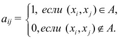
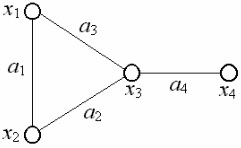
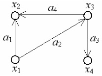
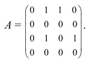

Матрица смежности A = (aij) определяется одинаково для ориентированного и неориентированного графов.
Это квадратная матрица порядка n, где n – число вершин, у которой

Пример 5.

Рис. 5
Матрица смежности графа, изображенного на рис. 5, имеет вид:

Пример 6.

Рис. 6
Матрица смежности ориентированного графа, изображенного на рис. 6, имеет вид:

Матрица смежности полностью задает граф.